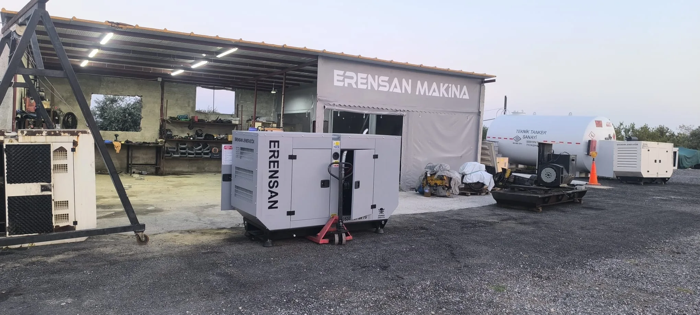

Telefon
Acil servis, arıza ve genel bilgi için doğrudan arayın.
0534 937 39 79Jeneratör satış, kiralama, kurulum, periyodik bakım, yedek parça ve teknik servis talepleriniz için telefon, WhatsApp veya e-posta üzerinden ulaşabilirsiniz.
Teklif sürecini hızlandırmak için güç ihtiyacını, kullanım süresini, açık adresi ve varsa cihaz etiket fotoğrafını paylaşın.
Erensan Jeneratör ve Makine Sanayi, Mersin Toroslar'daki merkezinden Türkiye genelindeki jeneratör taleplerine hizmet verir.
Profil açıldığında Yorum yaz seçeneğine dokunarak deneyiminizi paylaşabilirsiniz.

Haritadan konumumuzu inceleyebilir veya yol tarifi bağlantısıyla doğrudan navigasyonu başlatabilirsiniz. Yola çıkmadan önce ziyaret ve parça uygunluğu için aramanızı öneririz.
Talebinizi kısa bir mesajla iletin; doğru hizmete yönlendirelim.